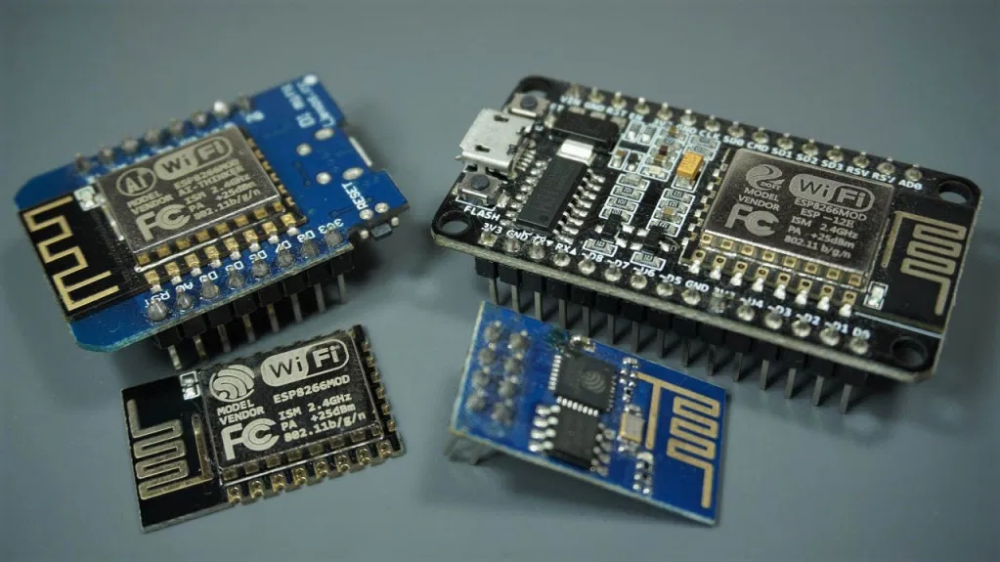
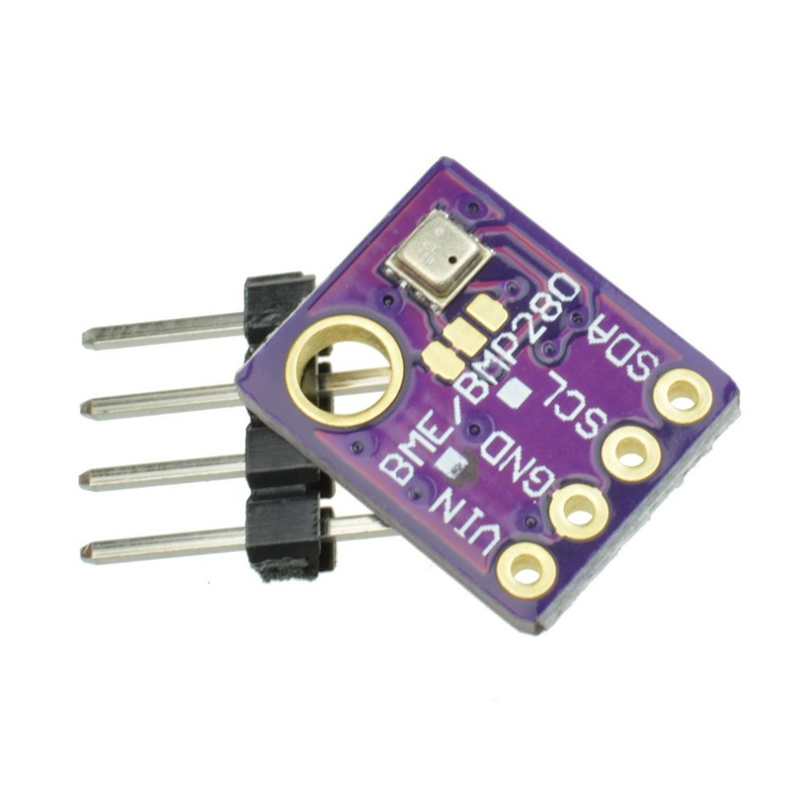

ESP8266 là một chip của Espressif Systems có tích hợp công nghệ Wi-Fi với đặc tính giá rẻ, tương thích với nhiều nền tảng. Nó thường được sử dụng trong các board mạch smart home giá rẻ như Sonoff Basic và các công tắc Wi-Fi. Module sơ khai nhất của ESP8266 là ESP-01.
Cảm biến áp suất I2C BMP280 3.3V với chi phí thấp, độ chính xác cao, tiêu thụ điện năng thấp rất phù hợp với những ứng dụng thiết bị di động. Cảm biến áp suất IIC I2C có thể đo được áp suất khí quyển với độ chính xác ± 12 hPa và đo được nhiệt độ với độ chính xác ± 1.0°C. Ngoài ra, cảm biến còn có thể đo được độ cao (ứng dụng việc áp suất khí quyển thay đổi theo độ cao).
Thực hiện lập trình cho ESP8266 thông qua phần mềm Arduino IDE
Link code chương trìnhCode chương trình:
#define TS_ENABLE_SSL // For HTTPS SSL connection
#define SECRET_SSID "oanhnguyen" // replace MySSID with your WiFi network name
#define SECRET_PASS "oanhnguyen" // replace MyPassword with your WiFi password
#define SECRET_CH_ID 1713269 // replace 0000000 with your channel number
#define SECRET_WRITE_APIKEY "DM02SEJGCBE6FNG0" // replace XYZ with your channel write API Key
// ThingSpeak Certificate Fingerprint, Expiration Date: August 3, 2022 at 8:00:00 AM EST
#define SECRET_SHA1_FINGERPRINT "27 18 92 DD A4 26 C3 07 09 B9 7A E6 C5 21 B9 5B 48 F7 16 E1"
#include
#include
#include "ThingSpeak.h" // always include thingspeak header file after other header files and custom macros
char ssid[] = SECRET_SSID; // your network SSID (name)
char pass[] = SECRET_PASS; // your network password
int keyIndex = 0; // your network key Index number (needed only for WEP)
WiFiClientSecure client;
unsigned long myChannelNumber = SECRET_CH_ID;
const char * myWriteAPIKey = SECRET_WRITE_APIKEY;
// Initialize our values
String myStatus = "";
// Fingerprint check, make sure that the certificate has not expired.
const char * fingerprint = NULL; // use SECRET_SHA1_FINGERPRINT for fingerprint check
#include
Adafruit_BMP280 bmp; // I2C Interface
void setup() {
Serial.begin(115200); // Initialize serial
while (!Serial) {
; // wait for serial port to connect. Needed for Leonardo native USB port only
}
WiFi.mode(WIFI_STA);
if(fingerprint!=NULL){
client.setFingerprint(fingerprint);
}
else{
client.setInsecure(); // To perform a simple SSL Encryption
}
ThingSpeak.begin(client); // Initialize ThingSpeak
// connect to bmp280
if (!bmp.begin(0x76)) {
Serial.println(F("Could not find a valid BMP280 sensor, check wiring!"));
while (1);
}
/* Default settings from datasheet. */
bmp.setSampling(Adafruit_BMP280::MODE_NORMAL, /* Operating Mode. */
Adafruit_BMP280::SAMPLING_X2, /* Temp. oversampling */
Adafruit_BMP280::SAMPLING_X16, /* Pressure oversampling */
Adafruit_BMP280::FILTER_X16, /* Filtering. */
Adafruit_BMP280::STANDBY_MS_500); /* Standby time. */
}
void loop() {
// Connect or reconnect to WiFi
if(WiFi.status() != WL_CONNECTED){
Serial.println();
Serial.print("Attempting to connect to SSID: ");
Serial.println(SECRET_SSID);
while(WiFi.status() != WL_CONNECTED){
WiFi.begin(ssid, pass); // Connect to WPA/WPA2 network. Change this line if using open or WEP network
Serial.println("...");
delay(5000);
}
Serial.println("WiFi connected");
Serial.println("IP address: ");
Serial.println(WiFi.localIP());
}
// display temperature on serial monitor
Serial.print(F("Temperature = "));
Serial.print(bmp.readTemperature());
Serial.println("*C");
// display pressure on serial monitor
Serial.print(F("Pressure = "));
Serial.print(bmp.readPressure()/100000); //displaying the Pressure in hPa, you can change the unit
Serial.println("Bar");
// read data from bmp280 sensor
float number1 = bmp.readTemperature();
float number2 = bmp.readPressure()/100000;
// set the fields with the values
ThingSpeak.setField(1, number1);
ThingSpeak.setField(2, number2);
// figure out the status message
if(number1 > number2){
myStatus = String("field1 is greater than field2");
}
else if(number1 < number2){
myStatus = String("field1 is less than field2");
}
else{
myStatus = String("field1 equals field2");
}
// set the status
ThingSpeak.setStatus(myStatus);
// write to the ThingSpeak channel
int x = ThingSpeak.writeFields(myChannelNumber, myWriteAPIKey);
if(x == 200){
Serial.println("Channel update successful.");
}
else{
Serial.println("Problem updating channel. HTTP error code " + String(x));
};
float time1 = millis();
// checking button status
while ((millis()-time1)/1000<1800){
int stat = ThingSpeak.readFloatField(myChannelNumber, 3);
Serial.print("stat: ");
Serial.println(stat);
if (stat == 1) {
// read data from bmp280 sensor
float number1 = bmp.readTemperature();
float number2 = bmp.readPressure()/100000;
// set the fields with the values
ThingSpeak.setField(1, number1);
ThingSpeak.setField(2, number2);
ThingSpeak.setField(3, 0);
// figure out the status message
if(number1 > number2){
myStatus = String("field1 is greater than field2");
}
else if(number1 < number2){
myStatus = String("field1 is less than field2");
}
else{
myStatus = String("field1 equals field2");
}
// set the status
ThingSpeak.setStatus(myStatus);
// write to the ThingSpeak channel
int x = ThingSpeak.writeFields(myChannelNumber, myWriteAPIKey);
if(x == 200){
Serial.println("Channel update successful.");
}
else{
Serial.println("Problem updating channel. HTTP error code " + String(x));
}
} else {
delay(1000);
}
}
}